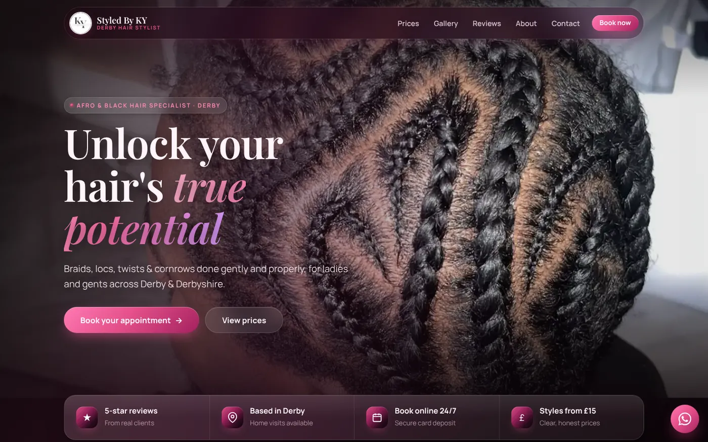
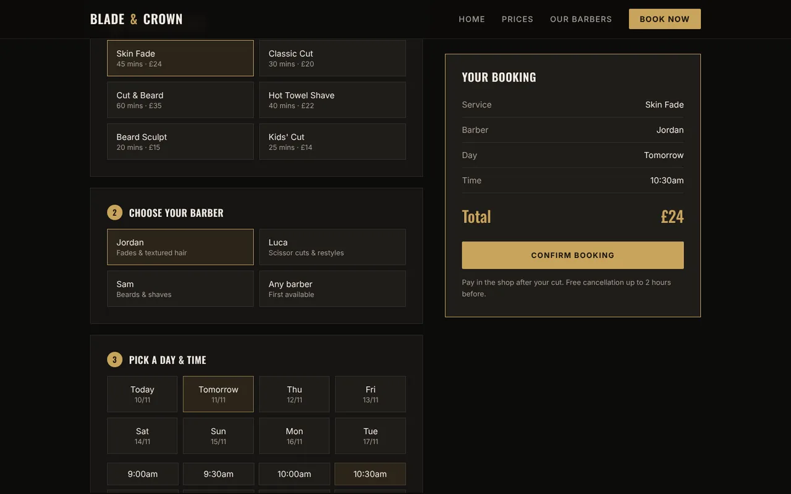

What a Hair Stylist Website Needs (Real UK Example)

It's 11:40pm. A client has just seen a set of knotless braids on Instagram and wants them for a wedding next Saturday. She messages you "hi hun how much for medium knotless and are you free sat".
You're asleep. By the time you reply at 7am, she's booked with someone who had a website.
This post walks through what a hair stylist website actually needs, using a real one: the site we built for Styled By KY, Deborah's afro and black hair business in Derby.
Say what you do, where, and from how much
Hair clients want three answers before anything else: can you do my style, are you near me, and what will it cost. Answer them on the first screen.
The Styled By KY homepage does it in a few lines. A small badge says "Afro & Black Hair Specialist · Derby". Underneath, one sentence lists braids, locs, twists and cornrows for ladies and gents across Derby and Derbyshire. Then a strip of four plain facts: 5-star reviews from real clients, based in Derby with home visits available, book online 24/7, and styles from £15.
The background is Deborah's own work, a close-up of patterned cornrows. No stock model with suspiciously perfect hair and a laptop. Your clients are booking your hands, so show them what your hands do.
There are two buttons: "Book your appointment" and "View prices". That's it. Anyone who arrives ready to book can do it in one tap, and anyone still deciding gets sent straight to the numbers.
Put the full price list on the page, by length
Hair is priced by style and length, which is exactly why "DM for price" is so tempting and so costly. Every DM asking "how much for long?" is a client who couldn't find the answer and might not wait for yours.
Styled By KY's price list is split into ladies, gents and locs, and each style is broken down by length. A client can work out her own price at midnight without bothering anyone.
Two small lines do a lot of work here:
- "Prices include labour only. Please bring your own braiding hair." That one sentence stops a whole category of awkward conversations at the chair.
- Length described in plain words, like "below chest", rather than a code only you understand.
If you add things like beads, curls at the ends or extra length, list them as add-ons with a price each. Our post on why "DM for price" costs you customers covers how to price jobs that vary without scaring people off.
Let clients book (and pay a deposit) at 2am
Most of Deborah's clients find her on their phones, often late at night. So the booking flow on her site works in four steps: choose your style, pick a time, add your details, pay a deposit by card. The page itself says it takes about two minutes.

Notice the bar at the bottom of the booking screen: it shows the total and the deposit due today, updated as the client picks. Nobody likes doing maths on their phone at midnight.
The deposit is what turns a booking into a commitment. Without one, a Saturday slot can sit empty because someone "forgot". Our guide on taking deposits online to cut no-shows covers the UK basics, including what to write in your policy.
You don't need a big salon system to get this. Here's the same idea on one of our concept sites, a demo barber shop rather than a real business:

Write your rules down before you need them
Every stylist has rules. Most only say them out loud after something has gone wrong, which is the worst possible time.
Styled By KY puts them in a "Before your appointment" section, in short cards a client can read in 20 seconds:
- The deposit: £15, non-refundable, paid by card when you book (£5 for £10 to £15 styles).
- Prep: arrive with freshly washed hair and bring pre-stretched braiding hair.
- Lateness: a 15-minute grace period, then a £10 late fee. After 30 minutes the appointment is cancelled.

Written down in advance, a late fee is just a rule. Said out loud on the day, it's an argument. Clear rules also make you look more professional, not less friendly.
Next to the rules sits an FAQ with the questions she used to answer in her DMs every day: where she's based, how much braids cost in Derby, how to pay the deposit, whether she does starter locs and retwists, and whether you need to bring your own hair. Those are also, word for word, the kind of things people type into Google.
Show real reviews, typos and all
The reviews on Styled By KY's site were copied straight from her Instagram DMs, typos and all. One says: "Very peaceful, very gentle and overall an amazing experience. I have to come back again xx".
That "xx" does more for trust than any polished testimonial. It reads like a real person, because it is one.
Don't tidy reviews up, don't write them yourself, and don't post ones you can't back up. Our guide on showing reviews on your website honestly covers the UK rules.
Keep a quick way to message you
Some clients will always want to ask something first. That's fine. Styled By KY has a WhatsApp button in the bottom corner of every page, so a quick question is one tap away.
The difference is that the website now handles the boring questions (price, deposit, what to bring), so the messages that do arrive are mostly from people who are nearly ready to book.
Keep the admin small
Behind the site, Deborah has a private dashboard where she can see her bookings, her calendar and her payments, and handle refunds, without touching any code.
That's the real point of a stylist's website. It's not there to look pretty (although hers does). It's there so she spends less of her evening answering "are you free Saturday" and more of it actually off.
One honest note: the site is recent, so we don't have booking figures to share yet, and we won't make any up. The full story is in our case study on Styled By KY and OTR Detailing.
Do this today
You can start on most of this before you have a website:
- Write your full price list, by style and length, and say what's included (labour only, or hair included).
- Decide your deposit amount and whether it's refundable. Then write it down.
- Write your lateness and cancellation rules in plain words, with the actual numbers.
- List your prep instructions: washed hair, stretched hair, how long to allow.
- Pin the five questions you get asked most, with answers, as an Instagram highlight.
- Screenshot your best client messages (with permission) for your future reviews section.
Where we come in
We build websites for stylists, barbers and salons as fixed-price packages: £350, £600 or £800, paid once, with optional hosting and support from £10 a month. Booking flows with card deposits, like the one above, are bigger builds, so we'll tell you upfront what yours would involve. Everything is on our services and prices page, and you can see Styled By KY alongside our other builds on our work page.
Not sure where to start? Get a free website audit and we'll tell you plainly what we'd change first.
FAQ
Do hair stylists need a website if they have Instagram?
Instagram is great for showing your work, but it's poor at answering prices, rules and availability at midnight. A simple website with your price list and a booking button does that job while you sleep, and Instagram can point to it.
Should a hair stylist take deposits?
For long appointments it's usually worth it, because a deposit means a no-show costs the client something rather than just you. Say clearly how much it is, whether it's refundable, and what happens if someone is late or cancels.
How much does a website for a hair stylist cost?
It depends on who builds it and what it does. Our websites are fixed prices of £350, £600 or £800, paid once, with optional hosting and support at £10 a month or £100 a year.
Should I put braiding prices on my website if they vary by length?
Yes. List each style with a price for each length, and say whether hair is included. Clients would rather work out a price themselves than wait for a reply.
Stylist, braider or barber?
Send us your Instagram or your current site and we'll tell you what we'd fix first. The audit is free and there's no hard sell.